BookMark
① How to sign up Git hub?
1. In this section, visitor will know how to sign up Git hub.
2. Press sign up botton.
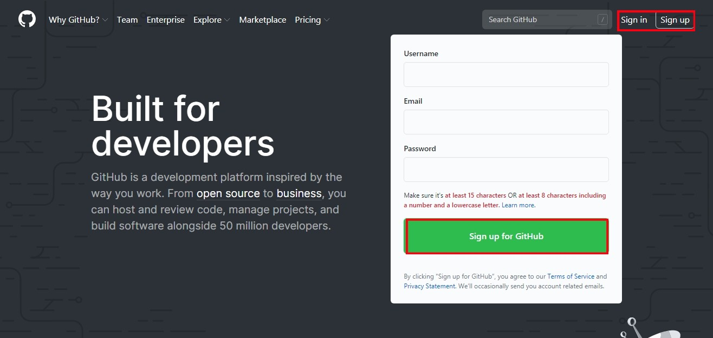
3. Fill in the blank and verify your accont. User names and emails will be shown to users all over the world. Choose carefully.
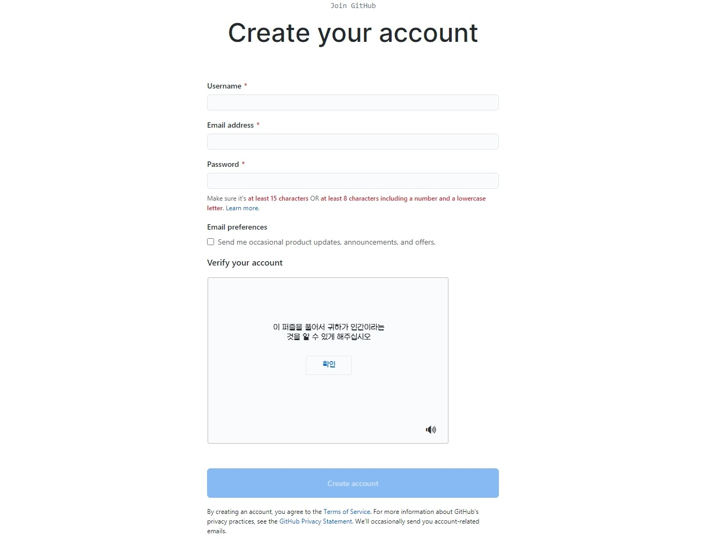
4. Select your interest.
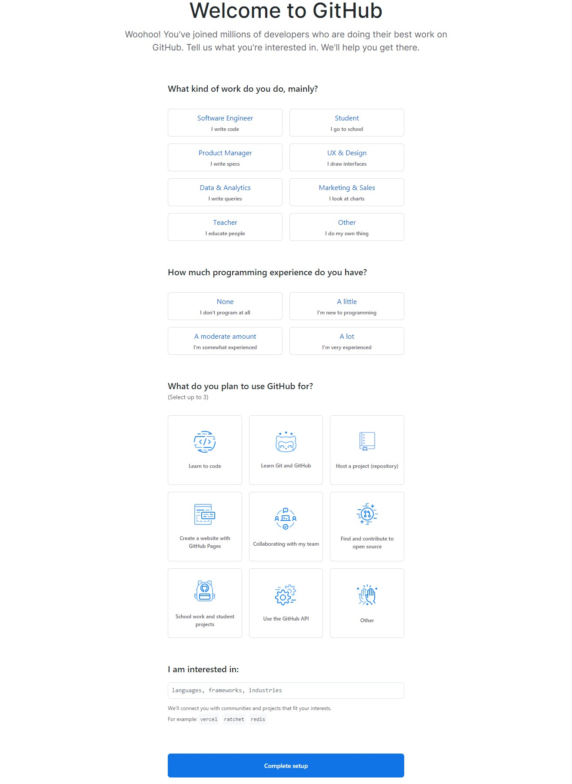
5. Verify your email address.
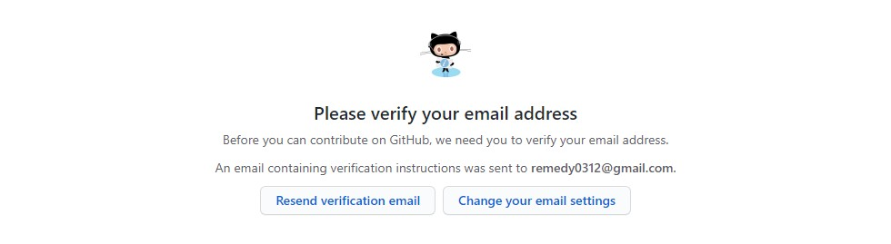
② How to create repository?
1. Let's create the first repository. Click green botton.
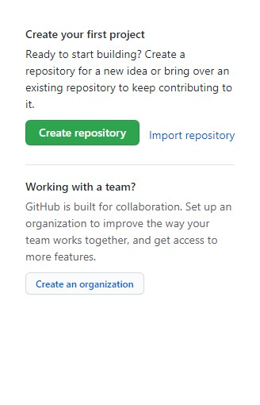
2. Assign an appropriate repository name.
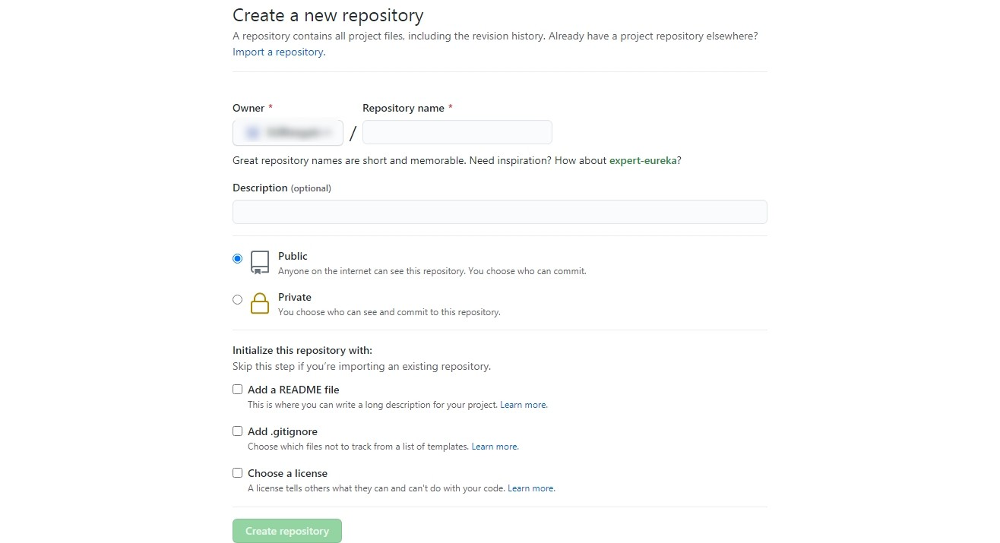
3. Write description if you want. Choose one of options.
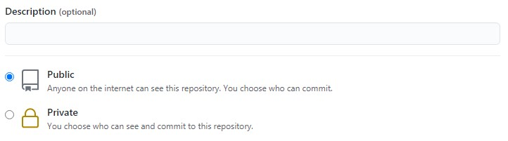
4. Set proper options considering the user's situation.
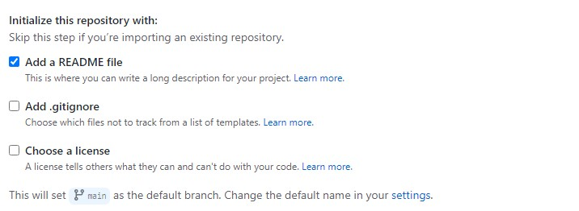
5. Click green button.
6. Now user can see new repository.
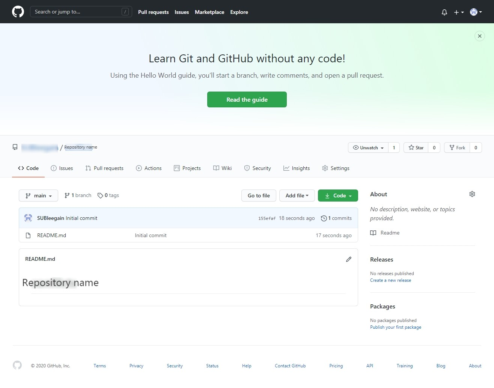
7. The user also is allowed to create or add new files on the GitHub.
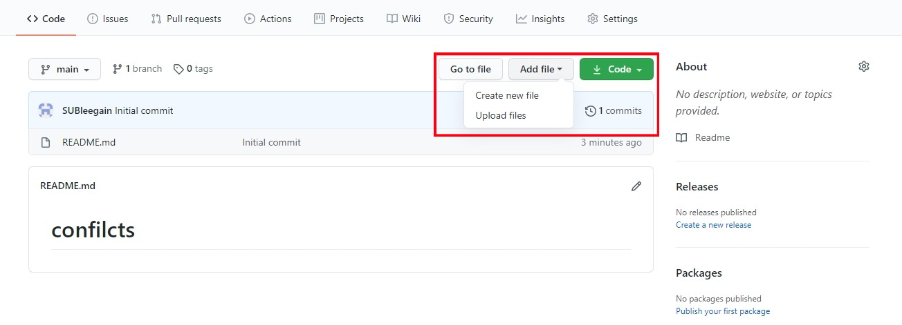
③ How to install Git hub?
1. Click on the following URL : GIT DOWNLOAD and download the installer for a user's operating system.
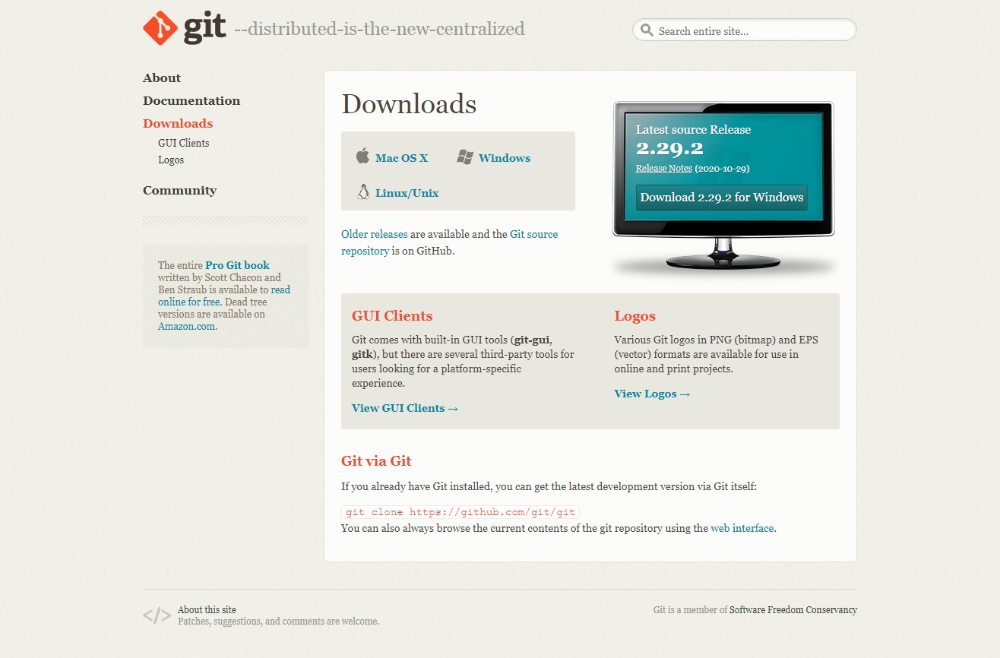
2. Run the installer in the download folder.
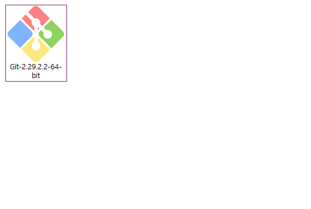
3. From this point, select the condition according to the user's situation. The picture below is a reference.
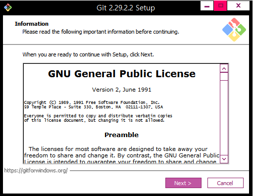
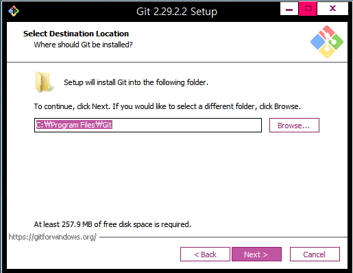
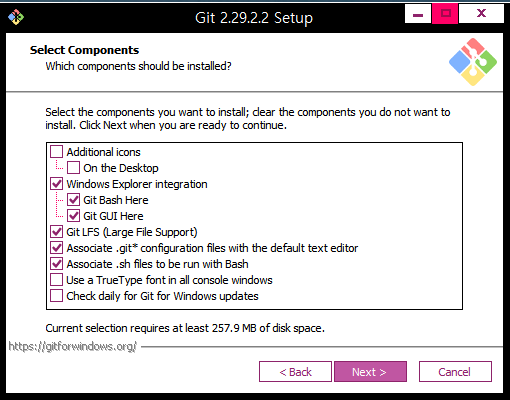
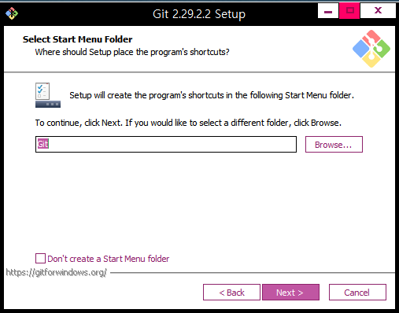
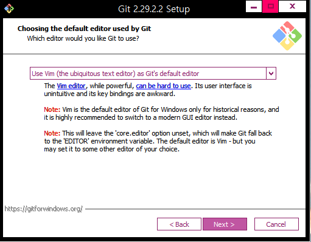
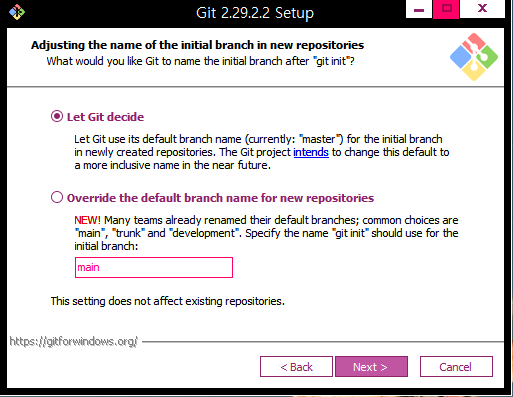
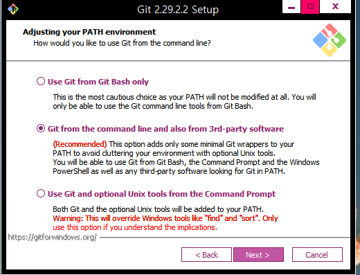
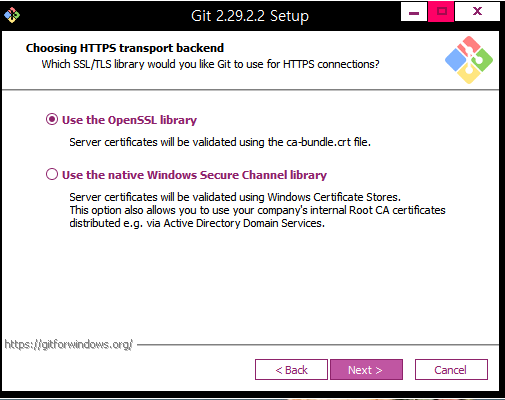
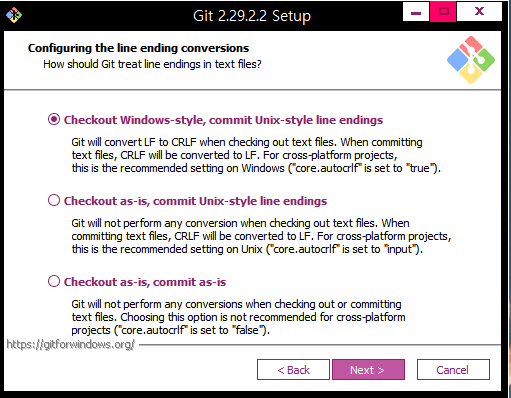
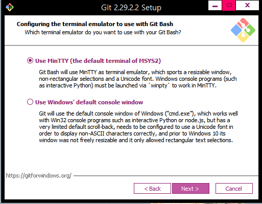
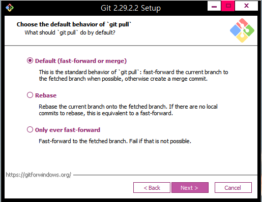
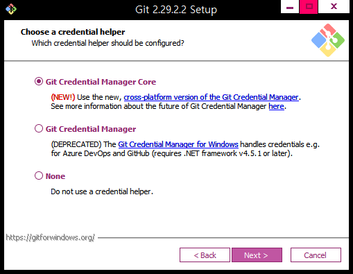
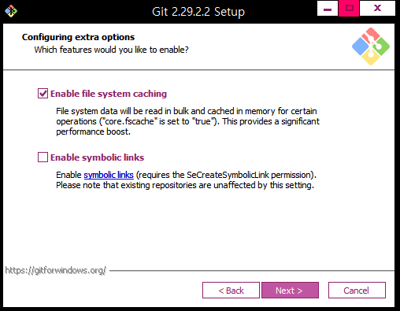
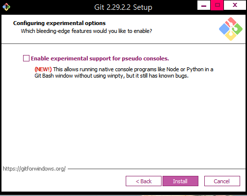
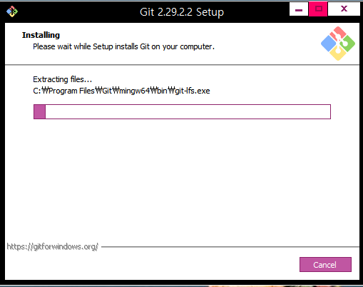
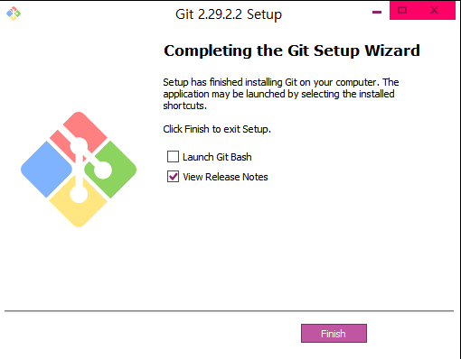